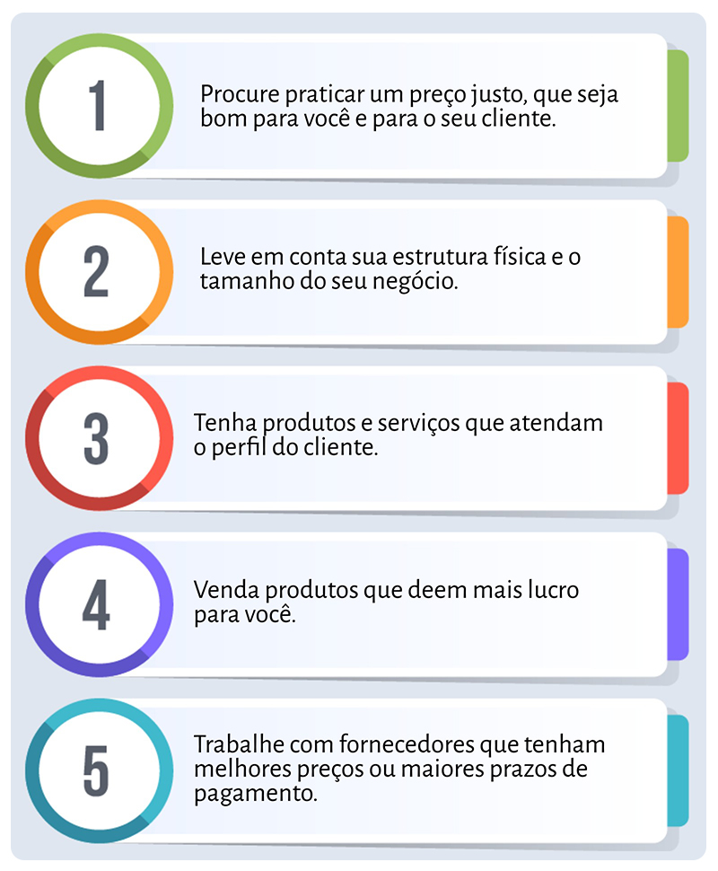

Empreendorimos
Sobre Empreendedores
Empreendedorismo é o processo de iniciativa de implementar novos negócios ou mudanças em empresas já existentes. É um termo bastante usado no âmbito empresarial e muitas vezes está relacionado com a criação de empresas ou produtos novos, normalmente envolvendo inovações e riscos.
Diga de Vendas
Noticias da Região
Empreendedorismo é o processo de iniciativa de implementar novos negócios ou mudanças em empresas já existentes. É um termo bastante usado no âmbito empresarial e muitas vezes está relacionado com a criação de empresas ou produtos novos, normalmente envolvendo inovações e riscos.